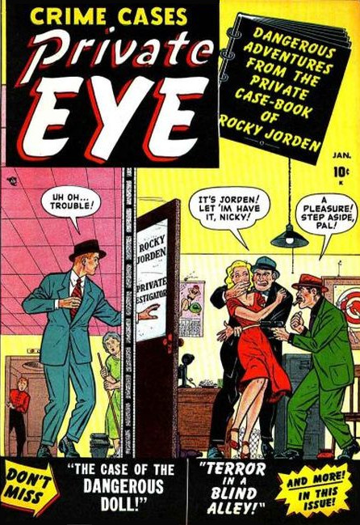

Series: 8 issues 1951
Illustrated by George Tuska, Vernon Henkel
Publisher: Atlas (Marvel)
Detective mystery anthology series. Dangerous adventures from the private case book of Rocky Jordan, a 1948 CBS radio detective series "A Man Named Jordan" and "Rocky Jordan", which were based in some part on the film "Casablanca".